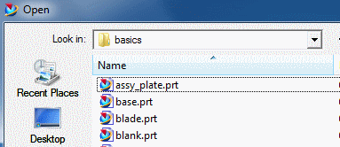
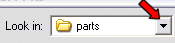

打开部件
使用打开  命令选择并打开来自 NX 和其它兼容的 CAD、CAM 软件的文件，所有文件类型都将作为 NX 部件文件打开，文件类型后缀名名为.prt。
命令选择并打开来自 NX 和其它兼容的 CAD、CAM 软件的文件，所有文件类型都将作为 NX 部件文件打开，文件类型后缀名名为.prt。

查找范围列表显示了当前目录的名称，这个目录中的所有文件和文件夹都将显示在该列表下方的窗口中。

预览功能允许用户在打开部件之前便可观察到其内容显示，当您并不确定您要找的部件名称时，预览功能十分有用。
位于何处？
|
工具条 |
标准→打开 |
|
菜单 |
文件→打开 |